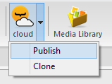
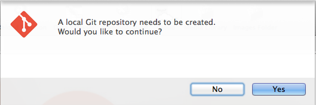
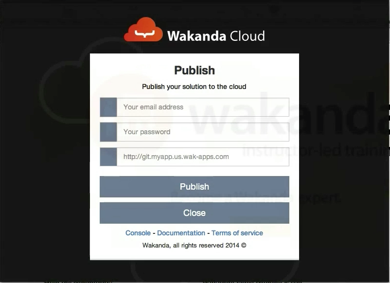

Getting Started¶
The following video demonstrates how to create an application from the dashboard and how to deploy and update it using Wakanda Studio.
Creating your first application¶
Once you are connected to your dashboard, click on the create your first app link to open the application creation wizard.

Start by choosing an application type from the suggestions. In our example, we will be creating a free application. To proceed, click on the Try it now button.

By default, your application will be created in the US region. If you prefer a different region, select it from the list.

Note
Only the US region is available during the beta program
Choose a valid application name:

Optionally, you can add subdomains and custom domains to your application’s configuration.


To create your application, click on the Finish button.

Developping your application with Wakanda Studio¶
First you need to download Wakanda : http://www.wakanda.org/downloads
To install wakanda follow the steps: installation
Now you can develop your first wakanda application, click here for more details
Publishing & Updating your application¶
Publishing your code the first time is the same as updating an already deployed application. All you need to do is push your new code to your application’s remote repository, which can be done using Wakanda Studio’s Cloud Extension, Git Command Line, or any IDE that supports Git Smart HTTP.
Application remote repository¶
You can get your application’s remote repository URL by clicking the copy repository button.

Using Wakanda Studio¶
Once you have opened your solution in Wakanda Studio, click on the Cloud extension button in the toolbar and select the update menu item.
If you have not initialized a local Git repository for your solution, you will be prompted to create one. To do so, click on the Yes button.
Fill in your Wakanda Cloud login information and your application remote repository URL and click on Publish.
If the operation was successful, you will receive details about the update. Otherwise, you will receive a message explaining any errors that have occurred.

Using the command line¶
Push your application to the remote repository using the following command
$ git push http://git.[my-application-name].us.wak-apps.com master
Note
If your local repository is using a branch name other than master, you must use the following command to push your application to the remote repository
$ git push http://git.[my-application-name].us.wak-apps.com [local-branch-name]:master